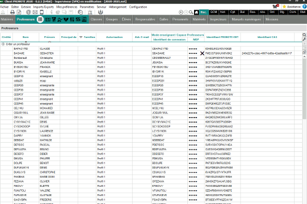

Il n'est pas toujours nécessaire de réaliser l'import d'un fichier csv, notamment quand il s'agit d'effectuer une association pour un nombre très limité d'utilisateurs
ou de traiter quelques cas marginaux.
Pronote permet dans ce cas de saisir directement ce qu'ils appellent l'Identifiant CAS dans une liste d'utilisateurs.
L'Identifiant CAS de Pronote doit correspondre à l'identifiant Pronote de l'utilisateur dans l'ENT (sur 36 caractères). Cet identifiant peut être récupéré via la
Gestion des comptes ENT, en affichant la fiche de l'utilisateur concerné :
